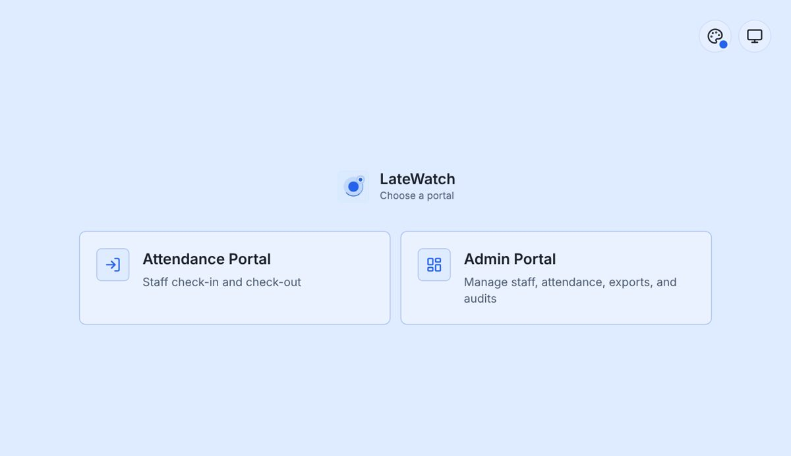
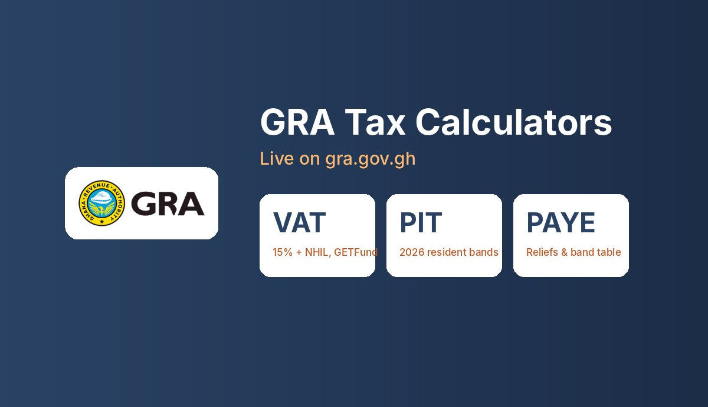
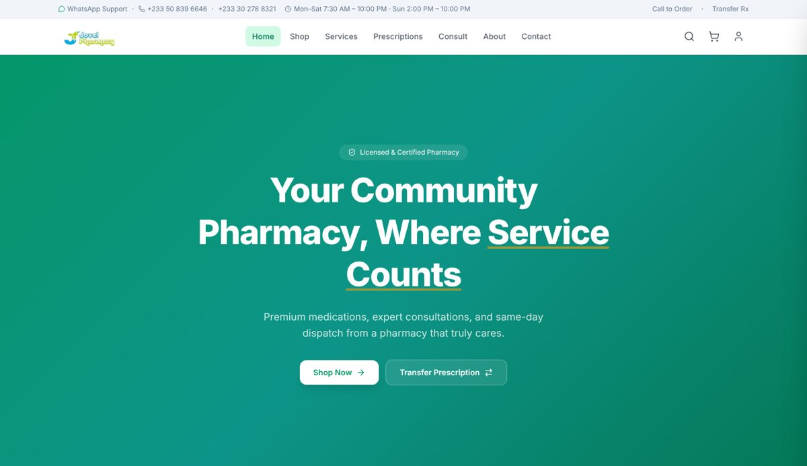

I build attendance systems GRA staff use daily
IT Management graduate (UPSA, 2025) and AI Software Engineer at the Ghana Revenue Authority. I build and support the systems staff rely on every day, and deliver websites and web systems for clients across Accra.
From internal tools at the Ghana Revenue Authority to e-commerce for local businesses. Every screenshot is from the live project.


VAT, PIT and PAYE calculators live on the official GRA website. They apply the 2026 rates and bands, show the tax on every band, and run entirely in the visitor's browser so no income data is stored.

Full online pharmacy: product shop with cart, prescription transfer, pharmacist consultations, customer accounts and an admin dashboard.
The mute LED on HP Laptop 15-dy0xxx machines never lit because the model was missing from the sound driver's quirk table. I traced the LED to a codec register with hda-verb, verified the fix on real hardware, and submitted the patch. The Linux sound maintainer applied it.
Subject: [PATCH] ALSA: hda/realtek: Enable mute LED on HP Laptop 15-dy0xxx The LED is controlled by COEF index 0x07, bit 0. This was verified on the hardware with hda-verb. Tested on an HP Laptop 15-dy0xxx (SKU 7FU54UA#ABA, board 864F, BIOS F.40). Signed-off-by: Carl Quist Applied now. Takashi Iwai, Linux sound subsystem maintainer
Attendance, inventory, voting and approval systems that replace manual office work.
Learn moreWhether you need a website, an internal system or dependable IT support, I'd like to hear about it.
Get in Touch